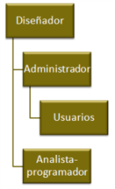

1.4. Accesos y usuarios
Importante
En este sentido, es necesario distinguir los roles de todos los posibles participantes en la elaboración, mantenimiento y utilización de una base de datos.
- Diseñador.- determina la estructura de la base de datos y los atributos y las relaciones de las entidades.
- Administrador.- controla el uso de la base de datos otorgando permisos de acceso, consulta, modificación de datos.
- Analista-programador.- crea o adapta las herramientas de gestión de la base de datos.
- Usuario final.- puede introducir, modificar, consultar los datos o generar informes.
|  |
En este esquema puedes ver las relaciones entre todos los elementos.
|
Comprueba lo aprendido
¿Quién es quién en una base de datos?
Relaciona cada tarea con su responsable: diseñador, administrador, programador o usuario.
Para saber más
La figura del administrador de una base de datos es tan importante que sus funciones están tipificadas en las políticas de Tecnologías de la Información.
Entre ellas están, por supuesto, controlar la seguridad y la disponibilidad de los datos. Entre sus deberes se suele incluir la "recuperación de desastres". Sí, sí, has leído bien. Debe responder ante un suceso desastroso.
Amplía tu información sobre esta figura y sus funciones en wikipedia.